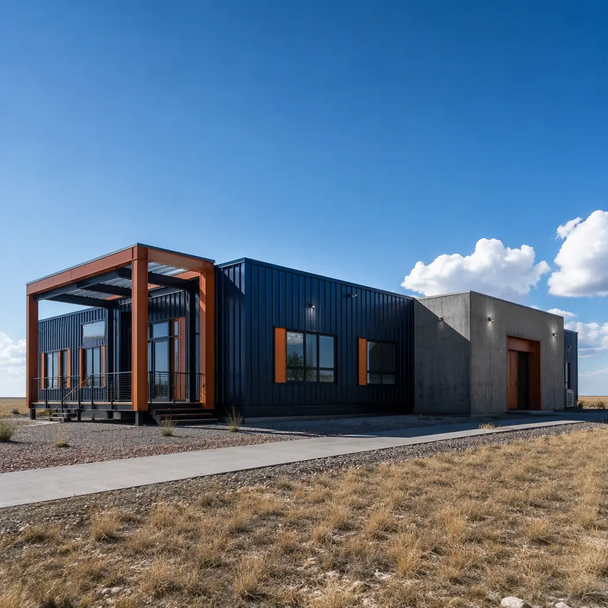
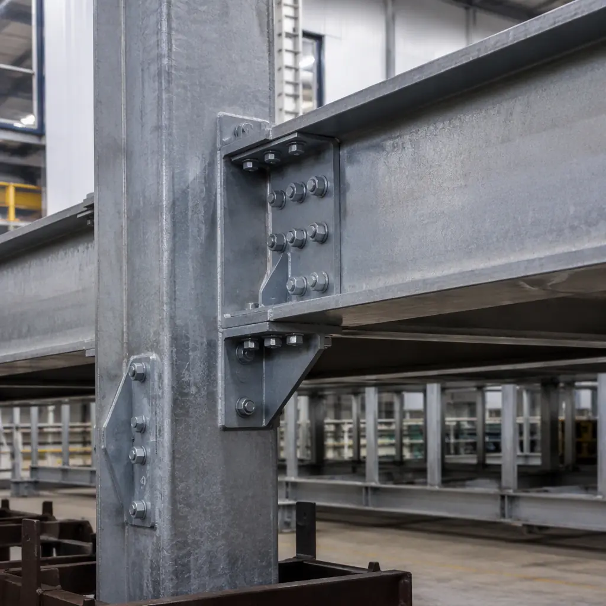
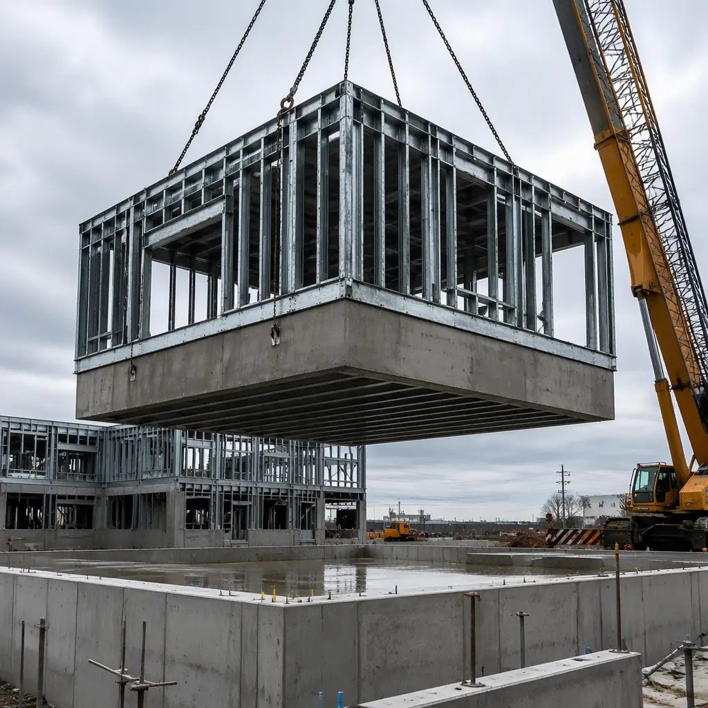
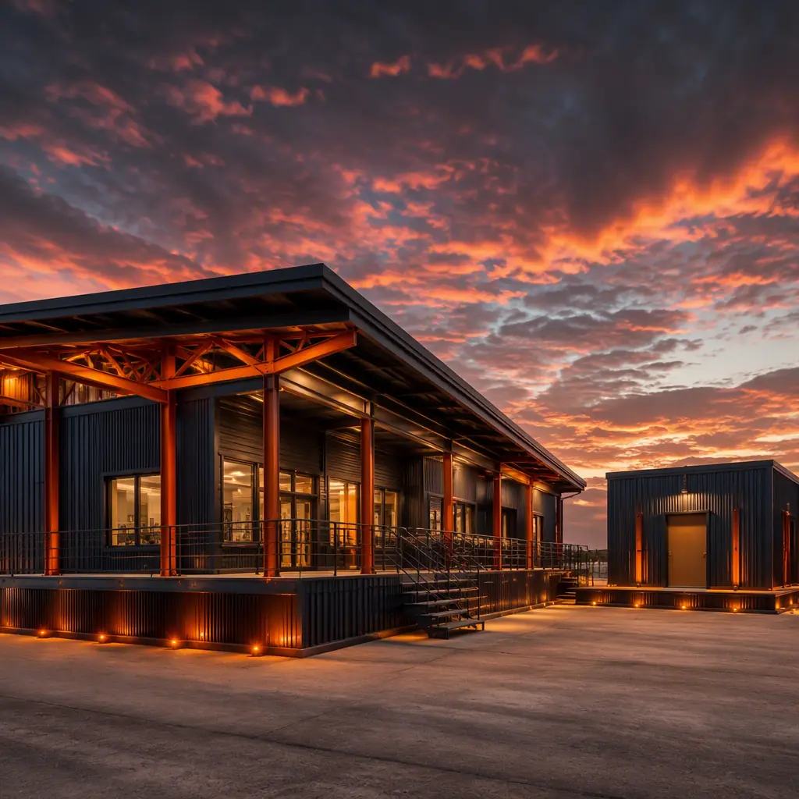

Wind is the most destructive force in building design, and the United States is exposed to both of its extreme forms: tornadoes across the central and southeastern states, and hurricanes along the Atlantic and Gulf coasts. A tornado can generate winds beyond 200 mph that lift entire roof systems, while hurricane winds of 130–180 mph (three-second gust) pummel buildings for hours with wind-borne debris. The conventional response — heavier site-built framing, more nails, more luck — is being replaced by an engineered one. Factory-built steel-frame modular construction is inherently suited to wind-hardened design because the load path is a single continuous structural system: every module-to-module connection, roof tie-down, and wall-to-foundation anchor is engineered, fabricated, and inspected in the factory, not improvised by a framing crew in the field. This guide explains the standards that define wind resistance — ASCE 7-22, ICC-500, FEMA P-361 — how modular steel frames meet them, what wind-hardening adds to cost, and what it saves in insurance and survival.

What "Wind-Resistant" Actually Means: ASCE 7-22 Design Loads
Wind resistance in modern building codes is not a vague aspiration; it is a set of calculated loads and prescriptive requirements anchored in ASCE 7-22, the standard that most U.S. building codes adopt. The design process starts with the wind speed map, which assigns every site a basic design wind speed — the three-second gust speed with a 7% probability of being exceeded in any year (Risk Category II). Typical values range from 115 mph in inland areas to 140–150 mph along the Gulf Coast and 170–180 mph in the highest hurricane zones such as coastal Miami-Dade County. The structural engineer then translates that speed into pressures on the roof, walls, and openings — accounting for exposure, topography, and building height — and designs every element from the roof deck to the foundation to resist the resulting uplift and lateral forces.
Three load-path elements matter most, and each is where modular construction differs fundamentally from site-built framing:
- Roof uplift resistance. Wind creates suction on roof surfaces that tries to lift them off the building. Factory-installed roof tie-downs and welded or bolted connections transfer that force directly into the module's steel frame.
- Wall and opening pressures. Positive and negative pressures on walls, plus internal pressurization when openings fail, drive the design of cladding, windows, and doors — the elements that fail first in a storm.
- The continuous load path. Every force must travel unbroken from the roof, through walls and connections, to the foundation. A single weak link — a roof-to-wall connection with three nails instead of engineered anchors — is where the building comes apart.
Our steel modular construction buyer's guide explains the structural system behind these load paths, and the envelope systems guide covers how the building skin is engineered to stay attached under load.
The Tornado Problem: EF Ratings and Debris Impact
Tornadoes present a different challenge from hurricanes. The Enhanced Fujita (EF) scale classifies tornado intensity by estimated wind speed — EF0 at 65–85 mph, EF2 at 111–135 mph, EF4 at 166–200 mph, and EF5 above 200 mph. The overwhelming majority of tornadoes are EF0–EF2, and a well-engineered building designed to code can survive those. The rare EF4–EF5 events — a handful per year — destroy most conventional buildings outright, which is why the code response is not to make every building tornado-proof, but to provide engineered safe rooms that protect occupants.
The second tornado-specific threat is wind-borne debris. Tornadoes convert surrounding structures, signs, and trees into missiles; a 2×4 timber driven at 100 mph can penetrate a standard wall or window. Building codes respond with missile-impact testing: glazing and wall assemblies in high-risk zones must survive impacts from a 9 lb 2×4 at up to 50 ft/s (hurricane, Missile Level D), and safe room envelopes must resist a 15 lb 2×4 at 100 mph (tornado, per ICC-500). These are pass-fail laboratory tests, and modular components — factory-fabricated wall panels and glazing systems — can be tested as complete assemblies before they are ever installed in a building.
For communities that must stay operational through storm season, our disaster relief and emergency housing guide covers rapid-deployment strategies, while this article focuses on permanent wind-hardened buildings.
How Modular Steel Frames Achieve a Continuous Load Path
The factory is the decisive advantage in wind engineering. A site-built structure's wind resistance depends on thousands of field connections whose quality varies with crew skill, weather, and inspection coverage. A modular structure's wind resistance is determined in the factory, where connections are made under controlled conditions and verified at defined inspection stations. The result is a structural system whose actual performance matches its engineering calculations — the core requirement of any wind-resistive design.

The module-to-module connection is the heart of the system. Each steel-frame module is a rigid box; when modules are joined, the connections between them — bolted splice plates at columns and beams, with capacity designed to transfer uplift and shear — make the assembled building behave as a single structure rather than a stack of boxes. Factory-fabricated connection plates are jig-drilled to ±2 mm, so the site assembly is a precision bolted operation with torque-verified connections, not an improvisation. The roof structure, floor diaphragm, and wall panels all tie into this same steel frame, creating the continuous load path from ridge to foundation that wind engineers specify.
Because the entire structural system is fabricated and inspected in one facility, wind-resistive details that are expensive to verify on site — weld inspections, bolt torque logs, anchor verification — are routine factory QA items. Our factory quality systems guide documents how these inspections are structured, and the structural warranties guide explains the coverage a buyer should expect for the load-bearing system.
Glazing, Roofs, and Envelope: Where Wind Failures Happen
Structural frames rarely fail first in a wind event — the building envelope does. Once a window breaks or a roof deck peels, internal pressurization multiplies the loads on the remaining structure, and progressive failure follows. Wind-hardened design therefore concentrates on the envelope:
- Impact-resistant glazing. Hurricane-rated windows and doors are tested to Missile Level D — surviving a 9 lb 2×4 impact at 50 ft/s plus 9,000 cycles of pressure cycling. Factory-installed glazing with tested frames removes the field-installation variability that undermines rated assemblies.
- Roof assemblies. Mechanically attached or adhered roof systems with factory-installed tie-downs resist the uplift that fails conventional roofs. The roof-to-wall connection is engineered, not nailed.
- Wall cladding. Impact-resistant wall panels and connection detailing prevent debris penetration and panel loss — the same envelope discipline detailed in our thermal insulation and energy code guide for the continuous air and weather barrier.
- Doors. Wind-rated entry and overhead doors, with tested hardware, protect the largest openings in the envelope — particularly critical for school buildings and community facilities where safe-room egress routes pass through them.
The modular advantage here is testability: envelope assemblies are built and tested as complete units in the factory, so the rated performance is the delivered performance. Field-assembled rated assemblies, by contrast, depend on installation quality that is difficult to verify after the fact.
Shelters and Safe Rooms: ICC-500 and FEMA P-361
For occupants in the path of an EF4 or EF5 tornado, the difference between survival and fatality is often a compliant safe room. The governing standards are ICC-500 (2020), the code standard for storm shelters, and FEMA P-361, the design guidance for safe rooms, which together specify a shelter envelope that must withstand 250 mph wind speeds and a 15 lb 2×4 missile impact at 100 mph. Safe rooms are required in many jurisdictions for schools, emergency operations centers, and critical facilities in tornado-prone states — and they are among the most practical modular applications in wind engineering.
A modular safe room is a factory-built reinforced steel-and-concrete assembly: a hardened envelope with a tested door, ventilation, and anchorage designed as one unit. Because it is fabricated under controlled conditions, the rebar, concrete placement, and impact-resistant cladding are verifiable before delivery — eliminating the field quality variance that plagues site-cast shelters. The safe room module can be integrated into a larger modular building or installed as a standalone structure; either way, it arrives with its documentation complete. Communities pairing safe rooms with shelter-capable buildings — schools, fire stations, community centers — should review our fire safety construction guide for the complementary life-safety systems, and the extreme climate construction guide for the broader envelope strategy in severe-weather regions.

Cost and Insurance: The Economics of Hardening
Wind-hardening is not free, but its cost is bounded — and increasingly offset by insurance. The table below summarizes the typical cost structure for a wind-engineered modular building compared with a code-minimum site-built building in the same zone:
| Component | Code-Minimum Site-Built | Wind-Engineered Modular |
|---|---|---|
| Structural system | Field-framed, standard nailing | Factory steel frame, tested connections |
| Glazing | Standard windows (no impact rating) | Missile Level D impact-resistant |
| Roof system | Field-applied, tie-down variance | Factory tie-downs, engineered uplift path |
| Safe room (optional) | Site-cast concrete, field-verified | Factory-built ICC-500 module, pre-verified |
| Cost premium vs code minimum | Baseline | +5–15% for hardened envelope |
| Insurance premium impact | Baseline wind exposure | 5–35% reduction with Fortified or equivalent certification |
The insurance side is changing quickly. Programs such as the Insurance Institute for Business & Home Safety (IBHS) Fortified standards — and state-backed wind mitigation incentive programs in Florida, Alabama, and Texas — now reward documented wind-hardening with premium reductions of 5–35%, and some carriers condition coverage on it in high-risk coastal markets. Because modular buildings are delivered with complete engineering and inspection documentation, they are comparatively easy to certify for these programs — the paperwork that earns the discount is a byproduct of factory production. For the full cost framework, our cost per square foot guide and project risk reduction guide provide the underlying analysis.
Wind-hardened design is not about building a structure that cannot fail; it is about engineering the failure sequence out of the building. The roof does not detach, the window does not break, the load path does not break — and the occupants inside a compliant safe room survive the event that destroys everything around them. Factory-built steel-frame construction is the only mainstream building method in which that entire chain of resistance is fabricated, tested, and documented before the first piece arrives on site.
Planning a Wind-Hardened Modular Building
- Determine the design wind speed for your site. The ASCE 7-22 wind map, adopted by your local code, fixes the design basis; every structural and envelope decision flows from it.
- Decide the survivability target. Code compliance (survive design winds with damage), enhanced resilience (Fortified-style, stay insurable), or shelter capability (ICC-500 safe room for occupant protection) — each is a different scope and budget.
- Specify tested assemblies. Require missile-impact test reports for glazing, roof assembly test data, and connection torque documentation as contract deliverables.
- Verify the load path in the design review. Walk the module-to-module connections, roof tie-downs, and foundation anchorage with the manufacturer's engineer before fabrication release — our procurement guide covers how to contract this review.
- Coordinate insurance early. Engage the carrier's engineering team during design to confirm which wind-mitigation credits the building will earn; certification is easier to design in than to retrofit.
Owners and developers in wind-exposed regions should also review our coastal and flood-resistant construction guide, which addresses the combined wind-water threat at the coast, and the transportation and logistics guide for delivering hardened modules to remote or storm-prone sites.
